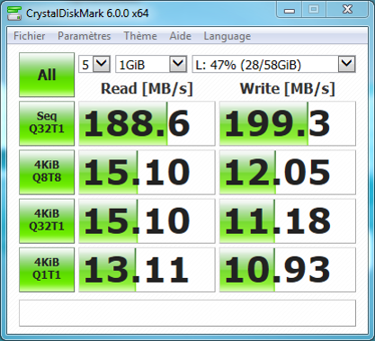

La clé USB fait parti du matériel obligatoire pour le cours 420-226 Systèmes d'exploitation 1, qui se donne normalement dès la session 1. Bien qu'une clé soit requise pour faire le cours, tu peux tout de même te procurer un autre modèle que celui suggéré par le CÉGEP si tu t'y connais. Cependant, la clé USB que tu choisiras doit absolument avoir:
Si tu possèdes déjà une clé USB d'au minimum 64 Go, alors tu peux utiliser le logiciel CrystalDiskMark qui est gratuit. Tu peux télécharger la version 6.0.0 en cliquant directement ici.
Une fois l'application téléchargée, assure-toi que tu sélectionnes bien ta clé USB dans le rectangle blanc en haut à droite de l'application! Pour le reste, utilise les options par défauts et effectue tous les tests (ALL).
Une fois les tests terminés, si tu obtiens des valeurs supérieures ou égales à 10 MB/sec dans les 8 cases vertes, alors tu pourras utiliser ta clé USB au CÉGEP. Dans le cas contraire, même si tu as obtenu des valeurs très grandes dans le test SEQ, tu devras néanmoins te procurer la clé USB suggérée par le CÉGEP.
